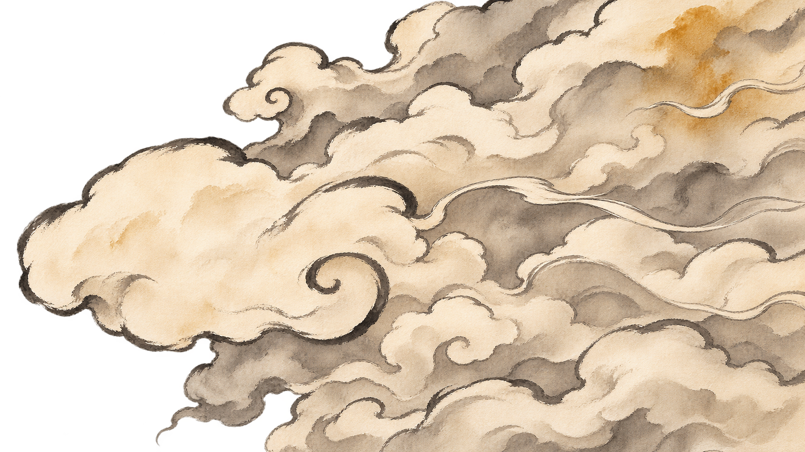
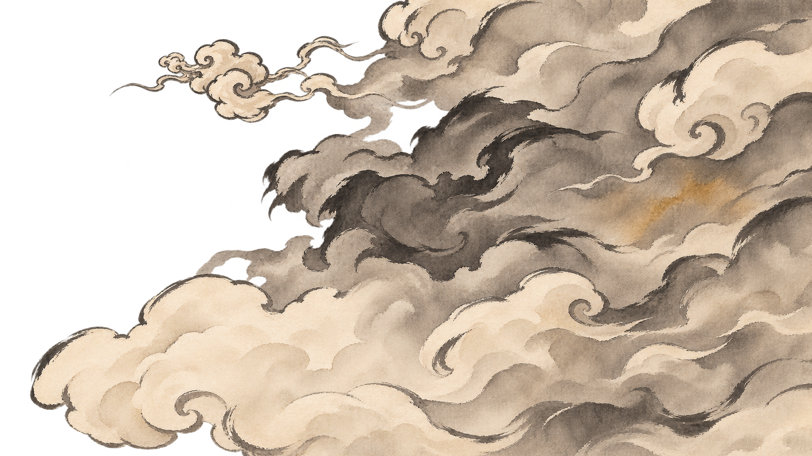
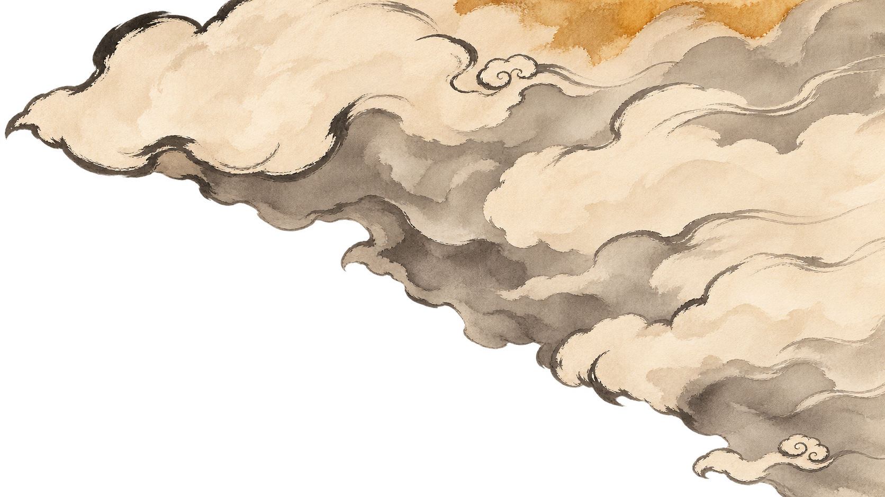
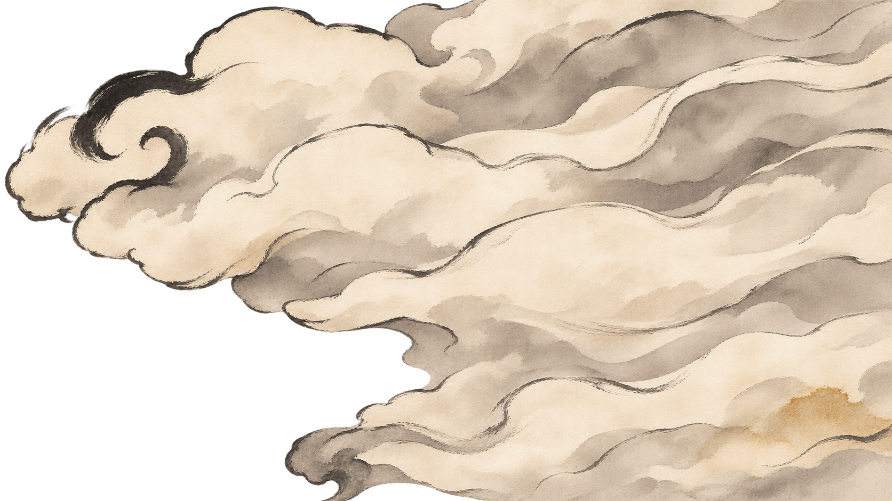
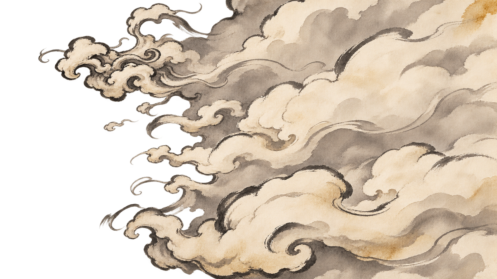
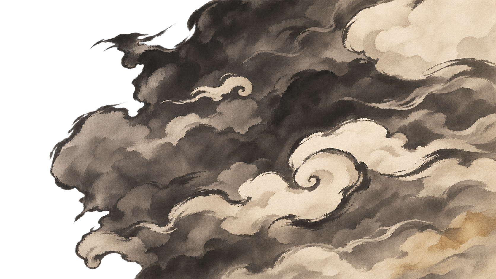

O — Billowing wall
A broad, blunt cloud head leads left, followed by smaller folds and fine trailing wisps.

P — Staggered arrival
A small upper leader and a heavier lower cloud create an uneven, stepped front.

Q — Slanting canopy
An overhanging upper cloud leads first; the diagonal edge delays the lower portion.

R — Long vapor folds
A quiet ivory cloud head stretches into long, fine-outlined folds trailing right.

S — Tangled whisker front
Intricate curls and broken filaments lead larger, calmer masses of cloud.

T — Charcoal squall
A dark, torn ink front carries scattered ivory cloud curls and gray vapor.